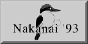

Back to Nakanai '93 Contents Page
In addition to the observational studies described above, the expedition team made a number of sound recordings of some of the birds encountered on New Britain. Copies of these recordings can be obtained from the British Library of Wildlife Sounds (BLOWS), at the National Sound Archive in London.
Also, we returned home with a large number of transparencies which document the expedition, New Britain and its people and wildlife. These can be hired for publication from Jonathan Clay, 3 Hartington Place, Carlisle. CA1 1HL.
| Pictures |
|---|
| People and Places 1 |
| People and Places 2 |
| Bird Photos |